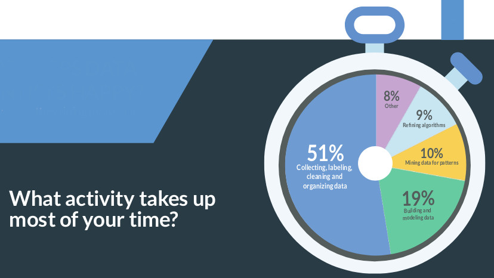

Data management for Neuroscience:
The BIDS standard
and DataLad
an Introduction
Adina Wagner
 @AdinaKrik
@AdinaKrik |
|
|
Psychoinformatics lab,
Institute of Neuroscience and Medicine, Brain & Behavior (INM-7) Research Center Jülich |
Slides: https://github.com/datalad-handbook/course/
What is (research) data management?
- (Research) Data = every digital object involved in your project: code, software/tools, raw data, processed data, results, manuscripts ...
- ... needs to be properly managed - from its creation to its use, publication, sharing, archiving, re-use, or destruction... (keyword: FAIR data)

- Research data management is a key component for reproducibility, efficiency, and impact/reach of data analysis projects
Why data management?

- Funders & publishers require it
- Scientific peers increasingly expect it
- The quality and efficiency of your work improves
How do you spend your time?
- Good data management can make your and others work & life much easier!
| CrowdFlower DataScience Report 2017 |
 |
Collaborative work and re-use of data are hampered by the effort it takes to access and understand the data.
Thomas Wachtler
How is (research) data management possible?
There are tools and concepts that can help:
- Version control your data
- Standardize file names and organization
- Document everything, ideally automatically
Why version control?

- keep things organized
- keep track of changes
Why standards?

- reduce misunderstanding and rewriting/rearranging efforts
Tools that can help with data management
- What is it?
- Why should I use it?
- How can I use it?
- BIDS is a structure
- BIDS is not a new file format
- BIDS is a standard
- BIDS is not a software tool. However, there is a large and growing amount of tools that are compatible with it that ease data archiving, data discovery/search, and analysis
- There is no "one" BIDS
- BIDS exist for (a growing amount of) different modalities. There is constant (open!) development of all of them
- BIDS helps you and others to intuitively understand your data
- A consensus on data organization spares you and others time to dive in to or rearrange data or scripts
- BIDS opens up a large range of tools for you:
- ⮊ BIDS Apps, e.g., fmriprep or MRIQC
- ⮊ BIDS-aware tooling, e.g., PyBIDS
- ⮊ brainlife.io
- ⮊ Upload your (or download others) BIDS-compliant datasets from OpenNeuro
- Useful links and pointers
- ⮊ Read the paper
- ⮊ Get started with the BIDS starter-kit
- ⮊ Work through the Stanford Center for Reproducible Neuroscience BIDS Tutorial Series
- ⮊ Use the BIDS validator to check your datasets
- ⮊ Get involved on Github to help shape BIDS to your needs. You can also checkout the Google discussion group
- ⮊ Follow @BIDS-standard
Reproducible paper - a Magic trick?
If curious, you can read up all the details and a step-by-step instruction here.  in brief
in brief
- A command-line tool, available for all major operating systems (Linux, macOS/OSX, Windows)
- Build on top of Git and Git-annex
- Allows...
- ... version-controlling arbitrarily large content,
- ... easily sharing and obtaining data (note: no data hosting!),
- ... (computationally) reproducible data analysis,
- ... and much more
- Completely domain-agnostic
- Today: Basic concepts and commands.
| ⮊ For more: Read the DataLad Handbook |
DataLad Datasets
- DataLad's core data structure
- Dataset = A directory managed by DataLad
- Any directory of your computer can be managed by DataLad.
- Datasets can be created (from scratch) or installed
- Datasets can be nested: linked subdirectories
Experience a DataLad dataset
Code to follow along: http://handbook.datalad.org/en/latest/code_from_chapters/01_dataset_basics_code.htmlLocal version control
Procedurally, version control is easy with DataLad!

Advice:
- Save meaningful units of change
- Attach helpful commit messages
Summary - Local version control
datalad createcreates an empty dataset.- Configurations (-c yoda, -c text2git) are useful.
- A dataset has a history to track files and their modifications.
- Explore it with Git (git log) or external tools (e.g., tig).
datalad saverecords the dataset or file state to the history.- Concise commit messages should summarize the change for future you and others.
datalad statusreports the current state of the dataset.- A clean dataset status is good practice.
Consuming datasets

- Datasets are light-weight: Upon installation, only small files and meta data about file availability are retrieved.
- Content can be obtained on demand via
datalad get.
Dataset nesting

Summary - Dataset consumption & nesting
datalad installinstalls a dataset.- It can be installed “on its own”: Specify the --source/-s of the dataset, and an optional path for it to be installed to.
- Datasets can be installed as subdatasets within an existing dataset.
- The --dataset/-d option needs a path to the root of the superdataset.
- Only small files and metadata about file availability are present locally after an install.
- To retrieve actual file content of larger files,
datalad getdownloads large file content on demand. datalad statuscan report on total and retrieved repository size- using
--annexand--annex alloptions. - Datasets preserve their history.
- The superdataset records only the version state of the subdataset.
reproducible data analysis

Code to follow along: http://handbook.datalad.org/en/latest/code_from_chapters/10_yoda_code.html
Basic organizational principles for datasets
- Keep everything clean and modular
 |
|
- do not touch/modify raw data: save any results/computations outside of input datasets
- Keep a superdataset self-contained: Scripts reference subdatasets or files with relative paths
Basic organizational principles for datasets
- Record where you got it from, where it is now, and what you do to it

- Document everything:
A classification analysis on the iris flower dataset


Reproducible execution & provenance capture
datalad run

How to get started with BIDS and DataLad
- Check out BIDS compliant datasets - with DataLad!
-
$ datalad install ///openneuro/ds000001 [INFO ] Cloning http://datasets.datalad.org/openneuro/ds000001 [1 other candidates] into '/tmp/ds000001' [INFO ] access to 1 dataset sibling s3-PRIVATE not auto-enabled, enable with: | datalad siblings -d "/tmp/ds000001" enable -s s3-PRIVATE install(ok): /tmp/ds000001 (dataset) $ cd ds000001 $ ls sub-01/* sub-01/anat: sub-01_inplaneT2.nii.gz sub-01_T1w.nii.gz sub-01/func: sub-01_task-balloonanalogrisktask_run-01_bold.nii.gz sub-01_task-balloonanalogrisktask_run-01_events.tsv sub-01_task-balloonanalogrisktask_run-02_bold.nii.gz sub-01_task-balloonanalogrisktask_run-02_events.tsv sub-01_task-balloonanalogrisktask_run-03_bold.nii.gz sub-01_task-balloonanalogrisktask_run-03_events.tsv - Read the DataLad handbook
- An interactive, hands-on crash-course (free and open source)
Acknowledgements
|
|
|